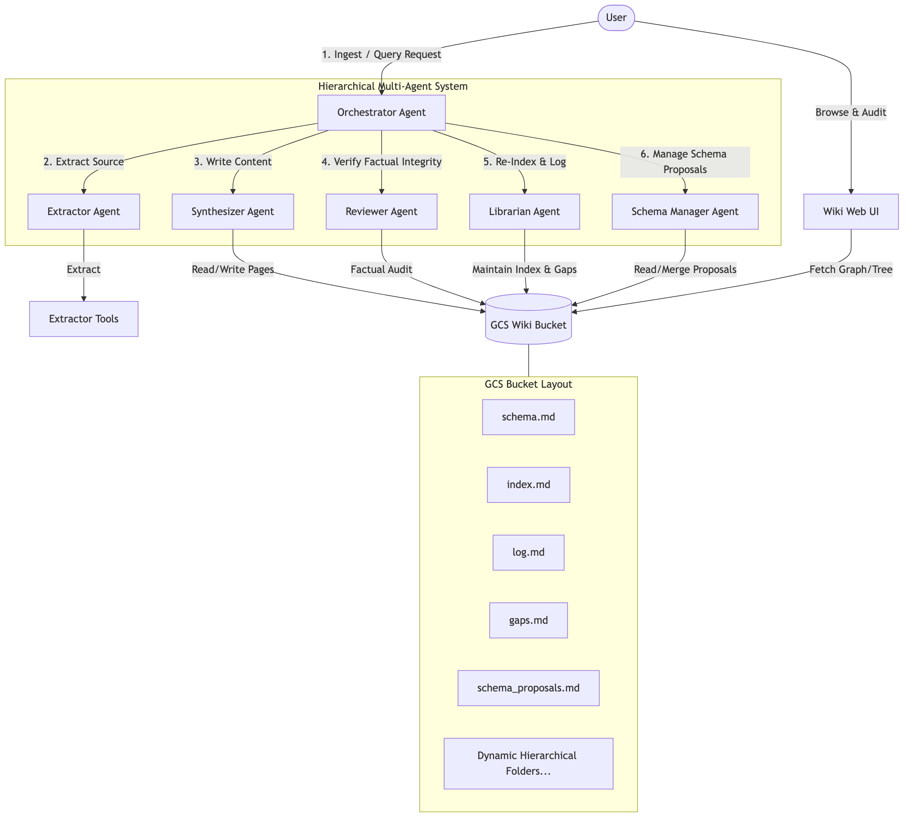
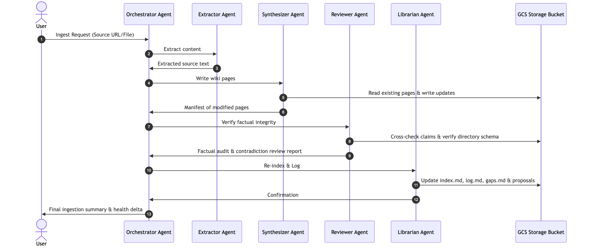
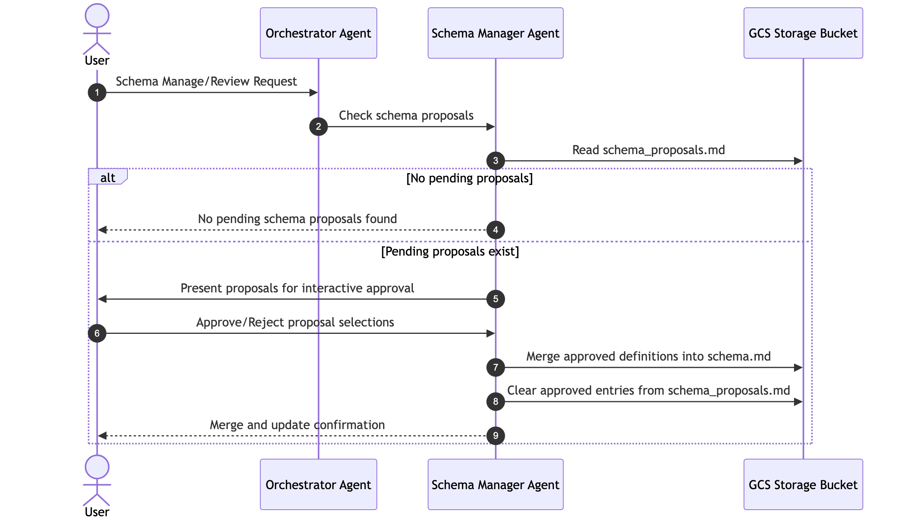
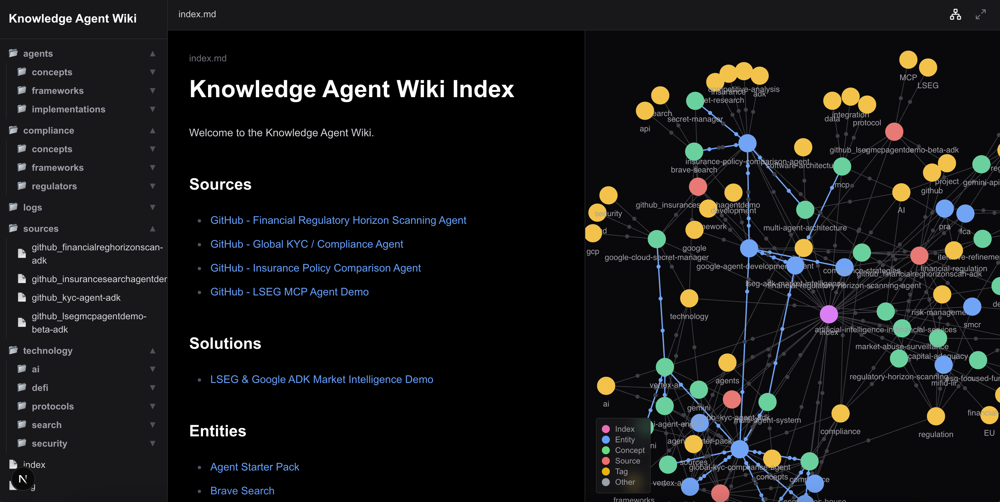

Retrieval-Augmented Generation (RAG) has been the go-to pattern for grounding Large Language Models (LLMs) in specific data. While effective, traditional RAG has a fundamental limitation: it is passive and stateless.
When a query comes in, the system searches a vector database for relevant chunks, dumps them into the prompt, and the LLM synthesizes an answer from scratch. It doesn't remember what it learned last time. It doesn't connect dots across different queries. It doesn't build a compounding model of the world.
This project demonstrates a different approach: the Active Knowledge Agent Wiki Pattern. Instead of relying on a vector database for passive retrieval, the agent actively builds and maintains a structured, interlinked knowledge base (a Wiki) in Google Cloud Storage (GCS).
Key characteristics of this pattern:
index.md file to navigate the wiki, avoiding the need for vector databases.The system is built using the Google Agent Development Kit (ADK) and leverages the gemini-3-flash-preview model for its reasoning and acting capabilities.
Rather than a single monolithic agent attempting to execute all steps sequentially, the system leverages a hierarchical multi-agent orchestration topology built using the Google Agent Development Kit (ADK). A central, highly structured orchestrator delegates specialized operational tasks to autonomous sub-agents:
agent.py): Coordinates incoming queries, triggers pipeline ingest cycles, delegates specialized subtasks, and compiles final reports.extractor_agent.py): Dedicated solely to source document retrieval, safely extracting un-truncated text content from PDFs, text files, and web URLs.synthesizer_agent.py): The composition engine that ingests source text, extracts structural entities and tags, and generates or modifies dynamic markdown files in GCS with typed relationships.reviewer_agent.py): The quality auditor. It parses newly written files to check for schema compliance, cross-checks claims against the whole wiki for contradictions, and creates stubs for knowledge gaps.librarian_agent.py): The bookkeeper. It updates the navigational index index.md, records chronological changes in log.md, and notes unresolved stubs in gaps.md.schema_manager_agent.py): Conditional Execution. This administrative agent runs only when pending directory schema revisions are logged in schema_proposals.md. It presents the suggested extensions and interactively updates the global schema.md file.
When a resource (file, URL, or raw text) is added to the wiki, the Orchestrator executes an automated, multi-stage pipeline:

To accommodate new knowledge domains without manual intervention, the orchestrator runs an interactive schema evolution workflow. The SchemaManagerAgent acts conditionally, executing only when there are proposals to process:

sources/ directory, identifies key entities, concepts, and protocols (like MCP), and places them in a logically determined hierarchical directory. It also identifies explicit relationships and tags, updates the index.md, and logs the action.index.md to locate relevant pages, reads them, and synthesizes a response, citing the sources.To make this compounding memory accessible to humans, the project includes a custom Web UI:
Tag Clustering: Files cluster around shared tag nodes, instantly revealing common knowledge areas.
Ontological Line Coloration: Explicit relationships are colored according to their semantic type (e.g. regulated_by, contradicts), illustrating the direction of knowledge flow.
ACTIVE (verified), STUB (empty placeholder referencing knowledge gaps), or CONTESTED (flagged for factual contradictions).
To fully appreciate the benefits of this approach, let's compare it directly with traditional Retrieval-Augmented Generation (RAG).
In a standard RAG setup:
Limitations:
Lack of Synthesis: The system never synthesizes the chunks into a coherent whole before query time.
No Cross-Referencing: It struggles to connect dots across different documents unless they happen to be retrieved together.
Hallucination Risk: Vector search can retrieve superficially similar but contextually irrelevant chunks, leading to hallucinated answers.
The Active Knowledge Agent Wiki pattern flips this model by having the agent actively manage a structured knowledge base.
Key Benefits Over RAG:
index.md and strict schemas, the agent knows exactly where to find information. It doesn't get confused by similar-sounding but unrelated chunks of text.This multi-agent implementation introduces several cutting-edge features that elevate it far beyond a simple file-writer:
When new content is ingested, the Synthesizer Agent writes updates with a calculated confidence score. However, before these changes are committed, the independent Reviewer Agent acts as a strict auditor. It cross-checks every claim against the entire existing wiki. If it detects a logical or factual mismatch, it does not crash; instead, it flags the file as contested: true and alerts the user, providing a highly resilient system that handles contradictory data gracefully.
Rather than being bound to a static directory structure, this wiki evolves organically. When the Librarian Agent identifies new concepts, it proposes new structural pathways in schema_proposals.md. The administrative Schema Manager Agent executes conditionally—spinning up only when proposals are pending—to allow users to review, select, and automatically merge new directories into the global schema.md conventions.
The system features an automated health checking utility (health.py) that scans the repository to calculate an overall Health Score (0.0 to 1.0). This weighted scoring function balances:
40% Volume of completed pages vs. empty placeholder stubs.
40% Average confidence scores of claims.
20% Ratio of contested conflicts in the wiki.
This provides a clear, actionable metric of knowledge base fidelity.
The Obsidian-like Next.js Web UI is fully integrated with this rich metadata layer.
Circle Gauges: Render high-fidelity confidence levels next to claims.
Factual Alerts: Dynamic warning boxes instantly alert users at the top of any contested page.
regulated_by, contradicts), offering instant ontology mapping.The Active Knowledge Agent Wiki pattern represents a step towards more autonomous and capable AI agents.
This project shows that with the right scaffolding and tools, LLMs can be empowered to manage their own knowledge, leading to more intelligent and reliable behavior.